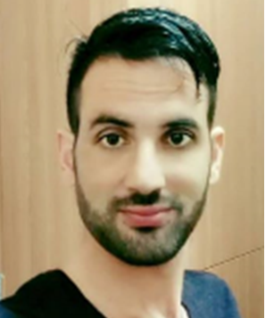

Qazi Mazhar ul Haq (Under Construction)
PhD Candidate (LPS)
National Taiwan University of Science and Technology (NTUST)
Low Power System Labortary (LPS)
Projects
- gem5McPATparse Python - Continual Learning for Yolov3 Object detection
- gem5-spm C++, Python - implementation of scratchpad memories in gem5 simulator
- iConmunicate Discontinued Android, Nearby, BT - messenger over bluetooth having a gallery of icons
- Look Around Discontinued Android, sensors, Unity, VR - reading QR retrieves information of places of interest, allowing to visualize it using virtual reality through the camera
- MusicSort Discontinued Python, Django, APIs - retrivies all the information of a set of songs uploaded, such as metadata, album cover, lyrics, etc.
Teaching
Course 2018/2019
Publications
@article{shieh2020continual,
title={Continual Learning Strategy in One-Stage Object Detection Framework Based on Experience Replay for Autonomous Driving Vehicle},
author={Shieh, Jeng-Lun and Haq, Qazi Mazhar ul and Haq, Muhamad Amirul and Karam, Said and Chondro, Peter and Gao, De-Qin and Ruan, Shanq-Jang and others},
journal={Sensors},
volume={20},
number={23},
pages={6777},
year={2020},
publisher={Multidisciplinary Digital Publishing Institute}
}
@article{ul2021edge,
title={An edge-aware based adaptive multi-feature set extraction for stereo matching of binocular images},
author={ul Haq, Qazi Mazhar and Lin, Chang Hong and Ruan, Shanq-Jang and Gregor, Derlis},
journal={Journal of Ambient Intelligence and Humanized Computing},
pages={115},
year={2021},
publisher={Springer}
}
@article{mazhar2016image,
title={Image De-Noising and Compression Using Statistical based Thresholding in 2-D Discrete Wavelet Transform},
author={Mazhar, Qazi and Siddique, Adil Masood and Touqir, Imran and Khan, Adnan Ahmad},
journal={Inernational Journal of Advanced Computer Science and Application},
volume={7},
number={11},
year={2016}
}
@article{ul2021incremental,
title={An Incremental Learning of YOLOv3 Without Catastrophic Forgetting for Smart City Applications},
author={ul Haq, Qazi Mazhar and Ruan, Shanq-Jang and Haq, Muhamad Amirul and Karam, Said and Shieh, Jheng Lun and Chondro, Peter and Gao, De-Qin},
journal={IEEE Consumer Electronics Magazine},
pages={11},
year={2021},
publisher={IEEE}
}
@article{ul20213d,
title={3D Object Detection Based on Proposal Generation Network Utilizing Monocular Images},
author={ul Haq, Qazi Mazhar and Haq, Muhamad Amirul and Ruan, Shanq-Jang and Liang, Pei-Jung and Gao, De-Qin},
journal={IEEE Consumer Electronics Magazine},
pages={11},
year={2021},
publisher={IEEE}
}
@article{chondro2020transferable,
title={Transferable Architecture for Segmenting Maxillary Sinuses on Texture-Enhanced Occipitomental View Radiographs},
author={Chondro, Peter Haq, Qazi Mazhar ul and Ruan, Shanq-Jang and Li, Lieber Po-Hung and others},
journal={Mathematics},
volume={8},
number={5},
pages={768},
year={2020},
publisher={Multidisciplinary Digital Publishing Institute}
}
@inproceedings{horromat,
title={Continual Learning Based on Knowledge Distillation Without Catastrophic Forgetting for Object Detection},
author={Haq, Qazi Mazhar ul and Shanq Jang Ruan},
booktitle={32nd VLSI Design / CAD Symposium 32, 131},
pages={11},
year={2021}
}
Trajectory
-
PhD
Electronics and Computer Engineering
Sept 2018 to Dec 2021
-
MS Electrical Engineering
National Taiwan University of Science and Technology
Sept 2014 - Aug 2016
-
Research intern
Industrial Technology Research institute Hsinchu Taiwan
Jan 2019 - Jan 2021
-->
Competitive internship to collaborate in a department and initiate to research
BSc Telecommunication Engineering
University of Engieering and Technology Peshawar
Sep 2010 - Jun 2014